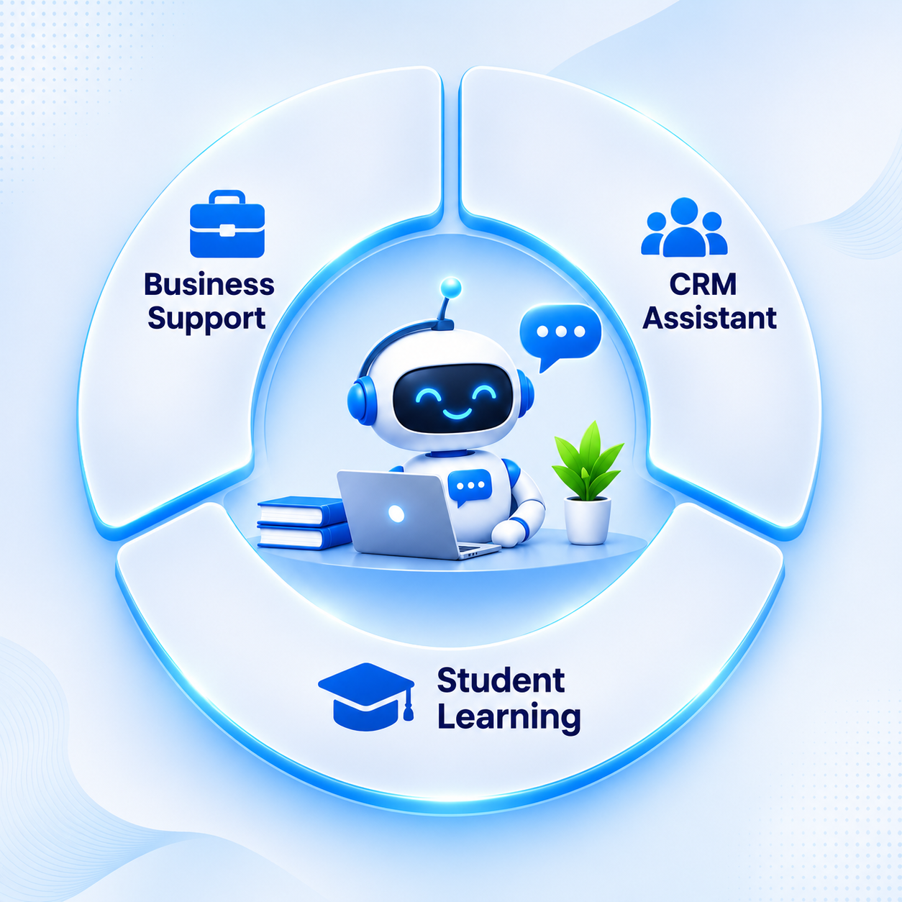
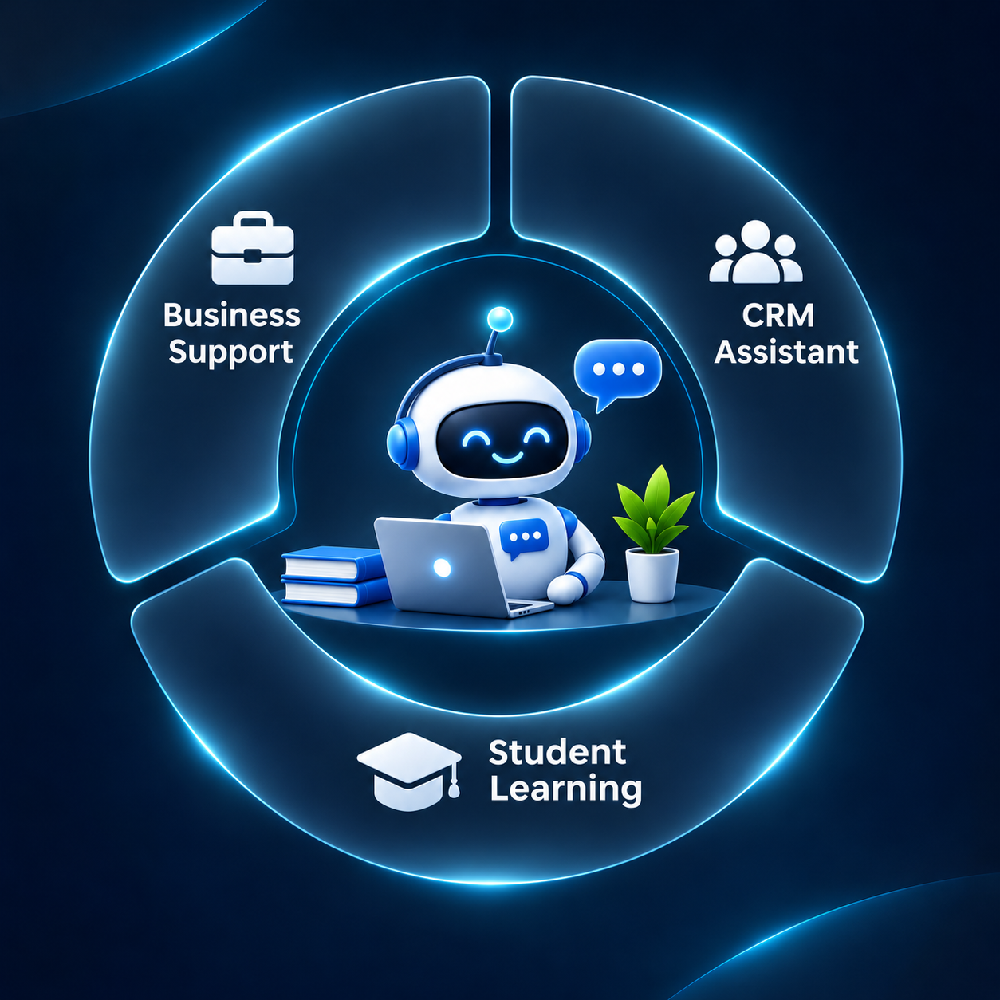
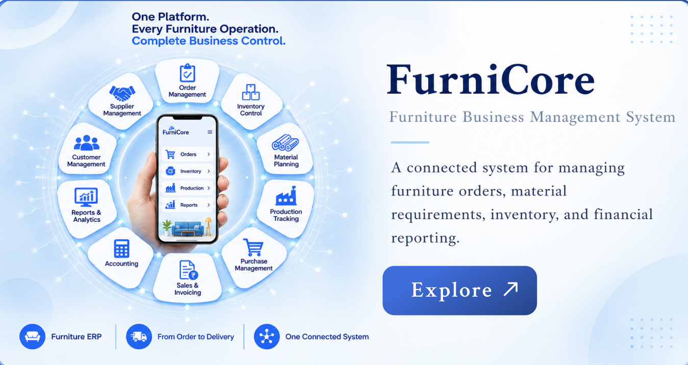
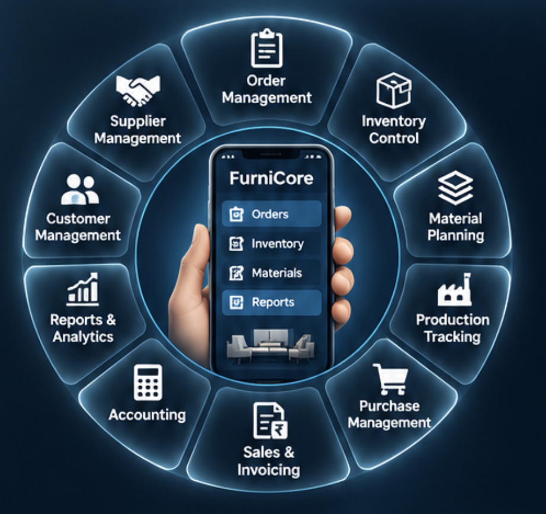
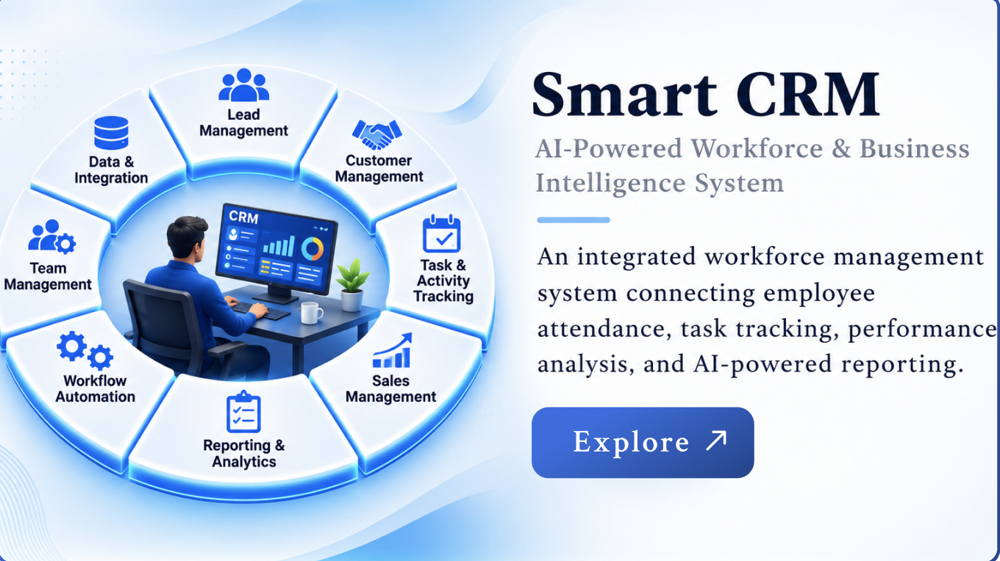
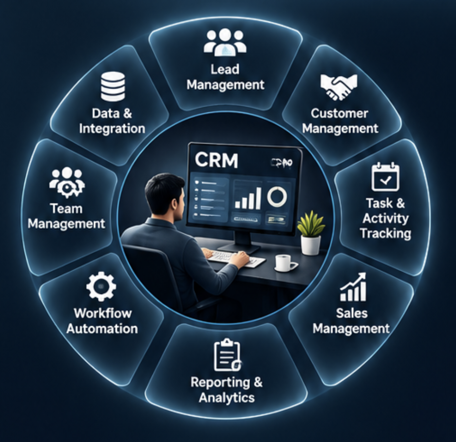

Turning Business Problems
Into Working Systems.
Businesses lose time when processes are disconnected, operations depend on repetitive manual work, and valuable data remains underutilised.
I bridge the gap between business needs and technology — designing and building practical solutions using AI, automation, application development, and system integrations.
From streamlining workflows and connecting existing tools to building AI-powered business applications, I turn complex requirements into systems that make businesses work smarter, faster, and more efficiently.
Understand the problem.
Engineer the solution.
Make it work.
Engineer the solution.
Make it work.
About Me.
Through freelancing, organisational involvement and independent technical implementations, I gradually found myself working at the intersection of business and technology.
What interests me most is the space between a business problem and its technical implementation.
What I Do.
Workflow
Application
Development
Website
Development
Technical
Coordination
AI
Integration
System
Integration
How I Work.
⌕UnderstandExplore the business, its people, workflows and challenges.
Understand how the business currently operates.
Identify repetitive tasks and operational bottlenecks.
Discuss requirements with stakeholders.
Observe how existing tools and systems are used.
OUTPUT:
A clear understanding of the actual business problem.
▣DefineTranslate business needs into clear technical requirements.
Break down the problem into functional requirements.
Identify system limitations and dependencies.
Define expected system behaviour.
Prioritise features based on business needs.
OUTPUT:
A structured solution scope and implementation plan.◈DesignPlan the architecture, integrations and solution approach.
Map workflows and system interactions.
Plan application structure and database requirements.
Identify automation and AI integration opportunities.
Select suitable technologies and services.
OUTPUT:
A technical blueprint for implementation.
⌘BuildDevelop the application, automation and AI integrations.
Build application interfaces and backend logic.
Implement business rules and data workflows.
Integrate APIs, automation and AI capabilities.
Use AI-assisted development to accelerate implementation.
OUTPUT:
A functional system built around the business requirements.
♙TestValidate functionality against real operational requirements.
Test features against expected workflows.
Validate data accuracy and business logic.
Identify and resolve implementation issues.
Refine the system based on testing results.
OUTPUT:
A validated application ready for deployment.
♧DeployDeploy, demonstrate and refine based on user feedback.
Configure and deploy the application.
Demonstrate workflows to actual users.
Gather feedback from the working environment.
Make improvements as operational needs evolve.
OUTPUT:
A working solution integrated into the business environment.
Projects.


TalkBot
AI Talk Bot for Business, CRM & Education
An AI-powered conversational bot for business support, CRM workflows, and educational learning for students.
In development: conversational assistance for business operations, CRM interactions, and student study support.


FurniCore
Furniture Business Management System
A connected system for managing furniture orders, material requirements, inventory, and financial reporting.
Includes order processing, stock management, automated material calculations and financial reports.


Smart CRM
AI-Powered Workforce & Business Intelligence System
An integrated workforce management system connecting employee attendance, task tracking, performance analysis, and AI-powered reporting.
Includes employee management, attendance, task tracking, dashboards and an AI agent connected to business data.
Let's Connect.
Have a business problem that needs a practical technical solution?